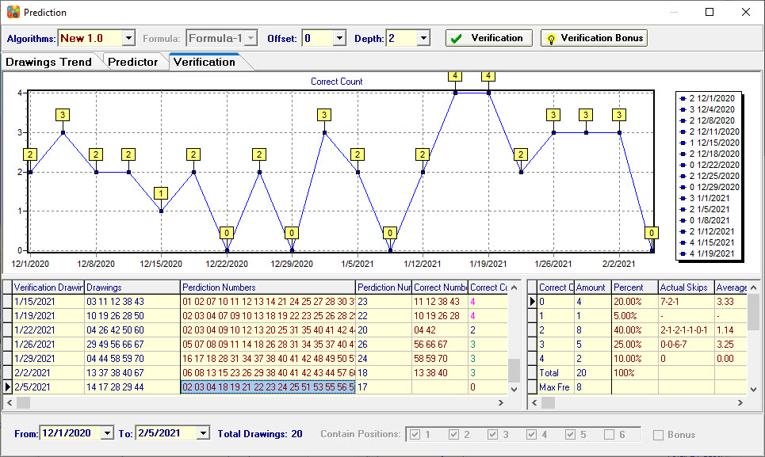

How to Verify |
Verification is the program can now accurately record its own prediction history. This feature is very useful as it helps us to analyze the prediction accuracy of each prediction formula and algorithm.
1. To verify prediction accuracy
On the Toolbar, click the
Prediction button then click Verification open the verify tab. Select one formula click Verification button to verify..
2. To verify bonus Number
If the lottery game has the bonus number, the Verification Bonus button will display. click Verification Bonus button to verify bonus number.
3. To change verify past drawings ranges
After selecting the range of drawings, you need to re-click Verification or Verification Bonus button to verify.

Home
Page: http://www.samlotto.com
Support:support@samlotto.com
Copyright: © SamLotto Lottery Software Team All rights reserved.